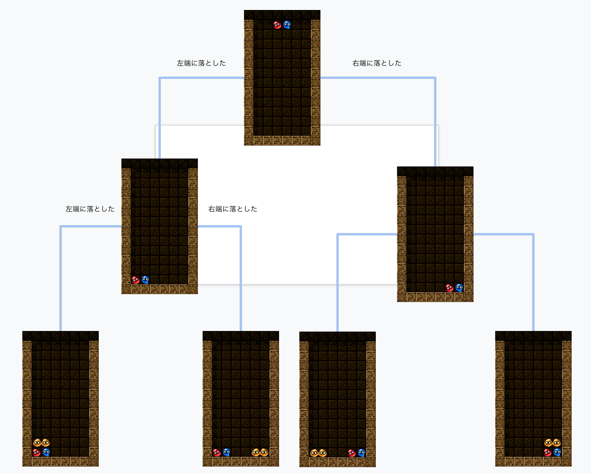
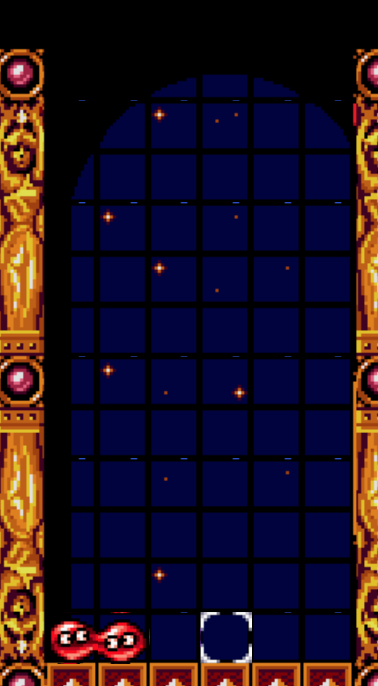

## ぷよぷよ風味のゲームAIを作った話 奥冨 匠
ぷよぷよ風味を感じてほしい <iframe width="560" height="315" src="https://www.youtube.com/embed/BBEeTwFGJmg" frameborder="0" allow="accelerometer; autoplay; encrypted-media; gyroscope; picture-in-picture" allowfullscreen></iframe>
目次 - 連鎖を作る方法 - 計算量を抑える方法 - 地道な高速化 - 勧誘
簡単な説明 - 縦横斜めで和が20になると消える！ぷよぷよ - 全部で1000ターンまであり、すべてのターンで落ちてくるぷよは前もって分かります
どうやって連鎖させればいいんだろう 自分もぷよぷよ出来ないのに…
#### 全部で1000ターンまであり、落ちてくるぷよは全て事前に分かります 総当たりでシミュレートすればいいのでは！
2手先までの図 
木構造といえば探索
探索アルゴリズム一覧 - 幅優先探索 - 深さ優先探索 - ビームサーチ - chokudaiサーチ
でも問題が! 盤面数が多すぎて時間がかかる！
1ターンに約40通りの落とし方があります
n手先まで全部見ると、40^n通りあります!! <img data-src="https://3.bp.blogspot.com/-BKAMRiYwJMU/VvIUB-eJ9lI/AAAAAAAA5DM/ls1IM5oJyP8z9h-zPdfVuoGDDistAGdUA/s400/jiko_rakka.png">
n手先まで全部見ると、40のn乗通りあります!! 全部見られない
枝刈りしよう！ <img data-src="https://4.bp.blogspot.com/-kAPATIKR69U/WlGnzyJ0uVI/AAAAAAABJeY/CtXicJVz3C0eShdqptLPYar-Bnu7jY9yACLcBGAs/s800/gardening_takaeda_kiribasami.png">
<img data-src="https://4.bp.blogspot.com/-kAPATIKR69U/WlGnzyJ0uVI/AAAAAAABJeY/CtXicJVz3C0eShdqptLPYar-Bnu7jY9yACLcBGAs/s800/gardening_takaeda_kiribasami.png">
連鎖しなさそうな状態になったら、その枝を打ち切る 例 - 中途半端に連鎖してしまった - 天井にぶつかりそう
~~~連鎖しなさそうな状態になったら、その枝を打ち切る~~~ 40本も枝があるので、むしろ優秀なのを選ぶ! <img data-src="https://2.bp.blogspot.com/-nJHp8vLIrEo/Wat3BxiPZTI/AAAAAAABGdY/awyKq7pb8LE9Q2VN5WygN1ygS9fHenj0ACLcBGAs/s800/tsuri_zarigani.png">
どうやって連鎖しそう度を数値にする？ <img data-src="https://1.bp.blogspot.com/-eMLID2dYzwM/VwIgW_nlilI/AAAAAAAA5bY/-osLYuNceb4GArB0E5Cl1D4oYMVDNVKIw/s800/question_head_boy.png">
評価関数の中でさらにシミュレータする 適当にぷよを落として、連鎖した数を評価した
これでうまくぷよを積んでくれるので、好きなタイミングで発火！ <iframe width="560" height="315" src="https://www.youtube.com/embed/8LHZSFz4rSc" frameborder="0" allow="accelerometer; autoplay; encrypted-media; gyroscope; picture-in-picture" allowfullscreen></iframe>
番外編 とはいえ大会中 他の人も同じことをやっているので僅差勝負
番外編 人より深く読みたい!!! 何手先までよめるのか! ※羽生さんは1000手先までよめるらしい
まず、一回探索した盤面をスキップする -> 効率化
盤面をhash化して、処理済みの盤面と比較
盤面をhash化? ZobristHash -> 最強 どんなゲームにも使える！早い！
すべてのマスのぷよの状態に乱数を割り振る 
各マスの乱数をそれぞれxor hash完成!
過去のhashと比べるの、O(N)かかってしまう ※シミュレートした過去の盤面数をN
weakhash! O(1)でチェック出来る!!!!!!
16bitのhashを作成し、 8bit,8bitのkey,valueに分ける
16bitのhashを作成し、 8bit,8bitのkey,valueに分ける b1111222233334444 -> b11112222 : b33334444
b1111222233334444 -> b11112222 : b33334444 ``` int hashList[0xffff]; if ( hashList[b11112222] == b33334444) { //シミュレートしたことある盤面だよ! } //Listにセット hashList[b11112222] = b33334444 ```
他にも空雑巾を絞るような高速化があります 盤面をbitとして管理する方法や、 IntelのCPU命令セットならSSE命令を直接叩く (ビットが立っている数を高速で数えるSSE命令:popcnt)
呪文みたいなコードだらけですが、意味が分かると面白いです！ ぜひぜひゲームAIコンテストへ！ [Coding Games and Programming Challenges to Code Better](https://www.codingame.com/)